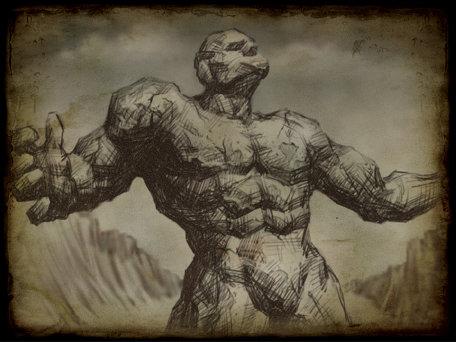

Establishment of the Holy See
Establishment of the Holy See
|
 |
After the war of the gods, Dema was left entirely in the hands of humans.
Then, during the Middle Ages of history, three great powers were established in Deman. In the center of Deman, Esch, who had made a long history centered on Mount Kardia, held the frame, and in the north, Shereg, who had developed scholarship and magic around numerous places containing the signs and magic of the gods, was established. Then, in Esch, a country called Yum was built around the people of South Korea. He repeated that the rest of the region remained unexplored or that small countries had emerged and disappeared. |
Focusing on this Sena, Deman made history.
Their efforts were successful, and after that, the Senara was able to spend peaceful days maintaining a subtle balance under the control of the Papacy. |
|
|
Copyright ⓒ 2000 ABALON STUDIO All Rights Reserved. |